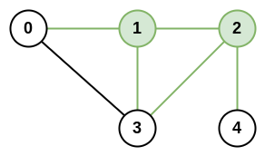

1615. 最大网络秩
预处理每城的度数和邻接表，双重循环枚举城市对：deg[i]+deg[j]−（相连 ? 1 : 0）取最大。
思路
- 城市对
(i,j)的网络秩 =deg[i] + deg[j]；若i、j之间有路，这条被数了两遍，减 1。 - 建度数数组
deg[]和邻接矩阵adj[][]，一次扫完roads。 - 双重循环枚举所有城市对（n ≤ 100，O(n²) 足够），逐对更新答案。
图解
最优解
1class Solution {2 public int maximalNetworkRank(int n, int[][] roads) {3 int[] deg = new int[n]; // deg[i]：城市 i 直接相连的道路数4 boolean[][] adj = new boolean[n][n];5 for (int[] r : roads) {6 deg[r[0]]++;7 deg[r[1]]++;8 adj[r[0]][r[1]] = adj[r[1]][r[0]] = true;9 }10 int ans = 0;11 for (int i = 0; i < n; i++) {12 for (int j = i + 1; j < n; j++) {13 // 两城度数相加；若两城之间恰好有路，这条被算了两次，减回 114 int rank = deg[i] + deg[j] - (adj[i][j] ? 1 : 0);15 ans = Math.max(ans, rank);16 }17 }18 return ans;19 }20}题目
n 座城市和一些连接这些城市的道路 roads 共同组成一个基础设施网络。每个 roads[i] = [ai, bi] 都表示在城市 ai 和 bi 之间有一条双向道路。
两座不同城市构成的 城市对 的 网络秩 定义为：与这两座城市 直接 相连的道路总数。如果存在一条道路直接连接这两座城市，则这条道路只计算 一次 。
整个基础设施网络的 最大网络秩 是所有不同城市对中的 最大网络秩 。
给你整数 n 和数组 roads，返回整个基础设施网络的 最大网络秩 。
示例 1：

输入：n = 4, roads = [[0,1],[0,3],[1,2],[1,3]] 输出：4 解释：城市 0 和 1 的网络秩是 4，因为共有 4 条道路与城市 0 或 1 相连。位于 0 和 1 之间的道路只计算一次。
示例 2：

输入：n = 5, roads = [[0,1],[0,3],[1,2],[1,3],[2,3],[2,4]] 输出：5 解释：共有 5 条道路与城市 1 或 2 相连。
示例 3：
输入：n = 8, roads = [[0,1],[1,2],[2,3],[2,4],[5,6],[5,7]] 输出：5 解释：2 和 5 的网络秩为 5，注意并非所有的城市都需要连接起来。
提示：
2 <= n <= 1000 <= roads.length <= n * (n - 1) / 2roads[i].length == 20 <= ai, bi <= n-1ai != bi- 每对城市之间 最多只有一条 道路相连
题面取自力扣当前版本。
数据快照 2026-11-04。题面版权归力扣所有，本站点仅供本人学习使用，请勿对外发布。